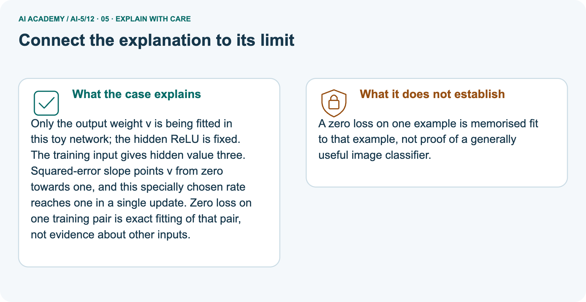

AI Academy · Level 5 · Grade 10 · Week 12 · Student lesson
Training a small network
Learn to understand, design, build, test and explain AI systems responsibly.
Project: Image-pattern Network Investigation
Before you start
Why should all parameters in one simultaneous update use the same saved gradient?
Plan time to read, investigate and explain. Keep predictions separate from observations.
Student lesson · 1 of 18
Your mission
Start with the target: Trace repeated forward loss gradient and update steps. Try the recall before opening notes.
Your learning target
I can trace repeated forward loss gradient and update steps.
I can keep frozen parameters distinct from the trained parameter.
I can report training results with their evaluation limits.
Remember before reading
Close your notes first. A rough first answer helps us choose the right starting point; it is not a score for your ability.
Without opening the old lesson, explain one key idea from Updating parameters. Give an example and a mistake that the idea helps you avoid.
Without opening the old lesson, explain one key idea from Slopes and local change. Give an example and a mistake that the idea helps you avoid.
Without opening the old lesson, explain one key idea from Forward passes by hand. Give an example and a mistake that the idea helps you avoid.
After trying, check the relevant lesson or ask your teacher. Change the part of your explanation that the evidence shows was wrong.
This week you will practise:
Trace repeated forward loss gradient and update steps
Keep frozen parameters distinct from the trained parameter
Report training results with their evaluation limits
Retrieve what you already know
Why should all parameters in one simultaneous update use the same saved gradient?
This week’s end goal
By the end, I can explain training a small network using a traced example and a stated limitation.
Student lesson · 2 of 18
Notice the evidence
Investigate the supplied Training a small network case. Separate observations, given facts and assumptions before choosing an explanation.
Use one hidden ReLU unit h = ReLU(x) and an output y = vh. The hidden input weight is fixed at 1, its bias is fixed at 0, and the output bias is fixed at 0. Only output weight v is trained.
This is a restricted two-layer network, not training every parameter of a general network.
Training pairs are (x, target) = (1, 2) and (2, 4). Both x values are positive, so hidden activations are 1 and 2. Define ordinary MSE over both rows.
Start at v = 0 and use learning rate 0.1 for exactly four full-data updates. The declared budget prevents stopping only when a preferred result appears.
| Update count | v | Training MSE |
|---|---|---|
| 0 | 0 | 10 |
| 1 | 1 | 2.5 |
| 2 | 1.5 | 0.625 |
| 3 | 1.75 | 0.15625 |
| 4 | 1.875 | 0.0390625 |
Each row evaluates the parameter value after that many updates. Row zero records the starting model. The loss decreases in this specific experiment; that pattern is not a promise for all networks or rates.
Student lesson · 3 of 18
See how it works
Follow the mechanism for Training a small network. Connect each labelled input, deciding step and result.
Let errors be v - 2 and 2v - 4. MSE is their squared sum divided by 2, which simplifies to 2.5 times (v - 2) squared. Its gradient with respect to v is 5 times (v - 2).
At v = 0 the gradient is -10, so the first update gives v = 0 - 0.1 times -10 = 1.
train = [(1.0, 2.0), (2.0, 4.0)]
v = 0.0
rate = 0.1
for step in range(5):
hs = [max(0.0, x) for x, target in train]
errors = [v * h - target
for h, (x, target) in zip(hs, train)]
loss = sum(e * e for e in errors) / len(train)
print(step, v, loss)
if step == 4:
break
gradient = 2 * sum(e * h for e, h in zip(errors, hs)) / len(train)
v = v - rate * gradientThe factor 2 comes from squared error; division by the number of rows makes this the gradient of the mean, not the sum. The code uses every training row for each update. It prints five states but performs only four updates.
All data are supplied fictional numbers.
Connect the picture and the explanation
Point to the input, the deciding step and the result in this week’s visual. Explain the same step in ordinary words. A picture helps when you can say what each part represents.
Student lesson · 4 of 18
Compare the cases
Compare the supplied cases for Training a small network. Identify the detail that changes the conclusion.
Compare a familiar case with a changed case
At v = 1, the sum of squared errors is 5. A learner uses gradient -10 with rate 0.1. Explain the mismatch with this lesson and give the next v under MSE.
Change one thing in the pictured case
Change one thing
Change: Change target from 3 to6 and restart v = 0 with the same rate.
Predicted result
Prediction: First gradient=-36; v becomes 2; prediction 6 and loss 0.
Why the result follows
Reason: The hidden value remains 3, but the target residual and required output weight double.
Student lesson · 5 of 18
Words that unlock the idea
Use the vocabulary of Training a small network to explain a concrete decision, rather than only memorising definitions.
| Word | Meaning |
|---|---|
| Training loop | A repeated sequence of prediction, loss calculation, gradient calculation and parameter update |
| Frozen parameter | A model value intentionally held fixed during fitting |
| Training budget | A declared limit on updates or other training resources |
| Learning curve | A record of a performance measure across training steps or time |
Student lesson · 6 of 18
Follow a worked example
Follow the worked trace for Training a small network, predict a step, then compare with its explanation.
One full-data update from v is 1
Learn from the worked case
Cover the result before checking it. Say what is given, choose the procedure, and follow one step at a time. Then uncover the result and explain your first mismatch. Ask why a step is allowed, not only what number it produces.
A pictorial worked case: Training a small network
Train a single output weight while clearly marking the frozen hidden computation.
The facts we will use
Supplied facts
Toy h=ReLU(x), y=vh. One training pair x = 3, target 3; start v = 0; squared loss; rate 1/18.
Supplied facts
All inputs and outcomes in this worked example are invented classroom data; no real model run is claimed.

Read the picture one step at a time
Why this result follows
Why the result follows
Only the output weight v is being fitted in this toy network; the hidden ReLU is fixed. The training input gives hidden value three.
Squared-error slope points v from zero towards one, and this specially chosen rate reaches one in a single update. Zero loss on one training pair is exact fitting of that pair, not evidence about other inputs.
What this example does not establish
Keep the stated limit
A zero loss on one example is memorised fit to that example, not proof of a generally useful image classifier.
Keep the stated limit
Read the labelled picture: Which parameter changed, and which part was not trained? Point to the relevant step in the picture, then write the changed result and the rule or evidence that supports it.
Keep the stated limit
Change one thing: Change target from 3 to6 and restart v = 0 with the same rate. Predict the result before checking the explanation. What remains the same?
Student lesson · 7 of 18
Find and repair a mistake
Find the unsupported step in the Training a small network claim and explain a repair using the supplied evidence.
Check the claim against the facts
After four updates, freeze v = 1.875. A reserved demonstration pair (3, 6), not used in the updates, receives prediction 5.625 and squared error 0.140625. Report it separately from training MSE 0.0390625.
One synthetic held-out example is a small demonstration, not evidence of broad real-world reliability.
Check the claim against the facts
The frozen representation has a limit: for any negative x, ReLU gives h = 0 and the output is always 0.
If the intended task were y = 2x for all real inputs, x = -1 would need target -2, so this model would fail there regardless of v. Training cannot recover distinctions that the fixed hidden representation removes.
Locate the earliest unsupported step
At final v = 1.875, calculate the prediction and squared error on reserved pair (3, 6). May its target be included in the four reported training updates?
Student lesson · 8 of 18
Practise together
Practise Training a small network with support, then explain the deciding step in your own words.
At v = 0, calculate both predictions, errors, MSE and gradient, then update at rate 0.1.
Practise with less help: Check the mean convention
Use workbook W2 for the connected example “Training a small network”. First fill the input and rule boxes. Try the middle steps before asking for a hint. After a hint, try the next step yourself.
| Plan | Do | Check |
|---|---|---|
| What is given? Which rule or procedure applies? | Record each intermediate step. | Does the result follow? What remains unknown? |
Explain your trace to a partner. Your partner points to one step to check. Swap roles on the next case. Each person writes their own explanation.
Check your reasoning
Use the worked case for Training a small network. Proposed explanation: “Every parameter was trained”. Decide whether this explanation is supported.
Point to the step or supplied fact that decides; explain your repair if needed.
Answer on your own before discussion. If you are unsure, say which step you need help with.
Explain the picture
Which parameter changed, and which part was not trained? Point to the relevant step in the picture, then write the changed result and the rule or evidence that supports it.
This is supported practice. Keep the separately named independent case for an attempt before feedback.
Student lesson · 9 of 18
Run the investigation
Investigate Training a small network. Record the prediction, actual observation or labelled paper trace, explanation and next test separately.
Predict, investigate and preserve the evidence
At v = 1, the sum of squared errors is 5. A learner uses gradient -10 with rate 0.1. Explain the mismatch with this lesson and give the next v under MSE.
train = [(1.0, 2.0), (2.0, 4.0)]
v = 0.0
rate = 0.1
for step in range(5):
hs = [max(0.0, x) for x, target in train]
errors = [v * h - target
for h, (x, target) in zip(hs, train)]
loss = sum(e * e for e in errors) / len(train)
print(step, v, loss)
if step == 4:
break
gradient = 2 * sum(e * h for e, h in zip(errors, hs)) / len(train)
v = v - rate * gradient| Record | Your evidence |
|---|---|
| Given input and fixed rule | |
| Prediction before checking | |
| Actual result, or “not run” | |
| First mismatch and one explanation | |
| Boundary or missing input and expected response |
On paper, trace the supplied procedure. If code is provided, predict before running it in a local practice file. Never write an expected answer as though it were an observed run.
Plan → try → check
Before trying: what do I expect, and why? While trying: which step could first go wrong? Afterwards: what did I actually observe, and what should change? Keep “not run” if you only traced the procedure.
Student lesson · 10 of 18
Build your understanding
Move from recall to tracing, diagnosis and transfer in Training a small network. Explain why each step is justified.
Explain → apply → challenge
At v = 0, calculate both predictions, errors, MSE and gradient, then update at rate 0.1.
At final v = 1.875, calculate the prediction and squared error on reserved pair (3, 6). May its target be included in the four reported training updates?
For the lesson architecture at x = -1, give h and prediction for any finite v. If target is -2, calculate squared error and explain why changing v cannot fix it.
Student lesson · 11 of 18
Connect your project
Apply this week’s idea to Image-pattern Network Investigation. Keep an annotated decision and the evidence supporting it.
Add a labelled training a small network evidence sheet to Image-pattern Network Investigation. Show how you can trace repeated forward loss gradient and update steps.
Use the supplied fictional case and keep its inputs, intermediate steps, calculation or prediction, and limitation. Connect this record to last week’s record; a matching answer without a trace is insufficient.
| Project evidence | Record |
|---|---|
| Component and version | |
| Inputs permitted at prediction time | |
| Trace and comparison with earlier work | |
| Failure, limit and human review |
Evidence for your project
For your Image-pattern Network Investigation, save the input, procedure, observed result and limitation of this check.
Label this worked example as practice; use a different, previously unreviewed case when checking independent understanding.
Student lesson · 12 of 18
Show what you know
Use a genuinely new case for independent evidence. Previously discussed examples remain practice; use the separately named independent case before feedback.
Save the model formulas, frozen values, trained parameter, initial value, data pairs, loss definition, learning rate, update budget and the printed trace. State that these numbers are a classroom experiment.
Changing a setting after seeing reserved outcomes makes those outcomes development evidence for that revision.
Next week separates an update, a batch and an epoch when training uses more than one group of examples.
For the lesson architecture at x = -1, give h and prediction for any finite v. If target is -2, calculate squared error and explain why changing v cannot fix it.
Student lesson · 13 of 18
Study a complete case
Revisit the complete Training a small network case for supported practice. Repeated examples do not become fresh assessments.
Complete evidence record
One full-data update from v is 1
Follow the input through the stated procedure to its result. Cover the result first, predict it, then explain every intermediate step. The text/table accompanies the figure so the example can be read without colour.
Student lesson · 14 of 18
Try a new case independently
Attempt the reserved new case before feedback. Record support; the earlier examples below remain additional practice.
Independent case: Run a new training case independently
Keep h = ReLU(x), train only v, and use one pair (2, 2), v = 0 and rate 0.125. Use squared error and gradient 2 times (2v - 2) times 2. Perform two updates, reporting each new v and loss.
Explain why the second update changes nothing.
Attempt this case before feedback. Record any help. Earlier examples below are further practice; a case already practised with feedback cannot establish fresh transfer.
Attempt this without hints
Keep h = ReLU(x), train only v, and use one pair (2, 2), v = 0 and rate 0.125. Use squared error and gradient 2 times (2v - 2) times 2. Perform two updates, reporting each new v and loss.
Explain why the second update changes nothing.
Record support used: none, hint or teacher explanation. After feedback, a different case is needed to demonstrate independence.
Use feedback to improve
Attempt the independent case before hints. Record whether you worked alone, used a hint or followed a model. After feedback, fix the first unsupported step and explain why it changed.
A later check uses a changed case, not a copied answer.
Student lesson · 15 of 18
Your lesson route
Use this map to navigate Training a small network, connect the goals to tasks and keep one evidence record for each attempt.
Start with this question: Train a single output weight while clearly marking the frozen hidden computation.
| By the end, I can | How I will show it |
|---|---|
| Trace repeated forward loss gradient and update steps | Explain the deciding step, show a trace or test, and state one limit. |
| Keep frozen parameters distinct from the trained parameter | Explain the deciding step, show a trace or test, and state one limit. |
| Report training results with their evaluation limits | Explain the deciding step, show a trace or test, and state one limit. |
Remember → watch and explain → try with help → investigate → try independently → keep project evidence. Your teacher may spread this lesson across several classes.
Keep your first prediction. Compare it with what the evidence shows and explain any change.
Student lesson · 16 of 18
Finish and return
Explain Training a small network without notes, identify a remaining question and plan a later check with a changed case.
Close your notes. Explain this goal in your own words: Trace repeated forward loss gradient and update steps
If you are unsure, return to the worked picture and explain one arrow. If you are ready, change an input or assumption and justify your prediction.
Save your workbook evidence. At the next review, try a different case before opening your old answer.
Student lesson · 17 of 18
Supported practice, repair and portfolio
Attempt supported questions before using hints or feedback. Review a missing building block, then keep the completed work.
Use this supported practice once, in the browser or on paper. Keep the reserved independent assessment for a separate first attempt before teacher feedback.
Train a single output weight while clearly marking the frozen hidden computation.
Practice 1: explain the deciding evidence
Which labelled step matches this detail? v becomes 1; prediction 3 and loss 0. Next gradient is 0.
1. Freeze hidden step
2. Update and verify
3. Compute initial gradient
Hint · try first
Hint if needed: Read the steps in the pictorial case. Match the supplied detail to the stage that performs or records it.
Feedback · compare after trying
After your attempt, compare with the supported explanation: Update and verify v becomes 1; prediction 3 and loss 0. Next gradient is 0. Only the output weight v is being fitted in this toy network; the hidden ReLU is fixed.
The training input gives hidden value three. Squared-error slope points v from zero towards one, and this specially chosen rate reaches one in a single update.
Zero loss on one training pair is exact fitting of that pair, not evidence about other inputs.
Practice 2: explain the deciding evidence
Changed case · predict first
Changed-case practice: Change target from 3 to6 and restart v = 0 with the same rate. Which conclusion is supported by the supplied facts?
1. First gradient=-36; v becomes 2; prediction 6 and loss 0.
2. We can decide the result without examining the changed input or the procedure.
3. This one example guarantees correct results for every future input.
Hint · try first
Hint if needed: Use the changed condition and the deciding step in the pictorial trace. The answer must say what follows from those facts.
Feedback · compare after trying
After your attempt, compare with the supported explanation: First gradient=-36; v becomes 2; prediction 6 and loss 0. The hidden value remains 3, but the target residual and required output weight double.
Repair a missing building block
Review Updating parameters (ai-5/11). Goal: Apply a learning rate to an ordered gradient. Short practice: Why must new loss be recomputed rather than assumed smaller?
Point to the relevant step in the picture, then write the changed result and the rule or evidence that supports it.. Return to this week and explain what you changed.
Review Slopes and local change (ai-5/9). Goal: Calculate an average rate of change over a stated interval. Short practice: Which calculation disproves “any increase helps”?
Point to the relevant step in the picture, then write the changed result and the rule or evidence that supports it.. Return to this week and explain what you changed.
Review Forward passes by hand (ai-5/6). Goal: Record scores and activations in dependency order. Short practice: Why should feedback identify h before correcting only y?
Point to the relevant step in the picture, then write the changed result and the rule or evidence that supports it.. Return to this week and explain what you changed.
Predict, run and debug
The browser lab lets you edit the supported Python examples already included in this lesson. Predict first, run, inspect the actual output or error, change one input, then run again.
Keep code, predictions, actual results and a reasoned revision together. On paper, label your result as a trace rather than an execution.
Keep your completed work
Use Download completed work in the hosted lesson to export your answers, reflections, practice feedback and code-run evidence. Open the HTML copy to read or print it.
Drafts stay in this browser when storage is available; clear drafts on a shared device.
Student lesson · 18 of 18
Visual concept journey
Explain each Training a small network graphic using its labels, deciding evidence and relevant limitation.
01. Training a small network: the case

Train a single output weight while clearly marking the frozen hidden computation. Supplied facts: Toy h=ReLU(x), y=vh. One training pair x = 3, target 3; start v = 0; squared loss; rate 1/18.
All inputs and outcomes in this worked example are invented classroom data; no real model run is claimed.
Point to the given fact that matters most. Explain why it matters.
02. Follow the deciding steps

Freeze hidden step: h=3 for this pair; only v is trainable. → Compute initial gradient: Loss 9; gradient 2(3v-3)×3=-18 at v=0. → Update and verify: v becomes 1; prediction 3 and loss 0. Next gradient is 0.
Point to each numbered stage and explain which recorded input it uses.
03. One full-data update from v is 1
![One full-data update from v is 1. Forward and loss | Predictions [1, 2] for targets [2, 4] | Errors [-1, -2], MSE 2.5. Gradient | 2 times (-1 times 1 - 2 times 2) / 2 | Gradient -5. Update with rate 0.1 | 1 - 0.1 times -5 | Next v is 1.5](../assets/academy-story-ai-5-12-03.png)
One full-data update from v is 1. Forward and loss | Predictions [1, 2] for targets [2, 4] | Errors [-1, -2], MSE 2.5. Gradient | 2 times (-1 times 1 - 2 times 2) / 2 | Gradient -5.
Update with rate 0.1 | 1 - 0.1 times -5 | Next v is 1.5
Read the labels and values. Explain the relationship the model shows.
04. Change one thing. Trace what follows.

Original case: v becomes 1; prediction 3 and loss 0. Next gradient is 0. Changed condition: Change target from 3 to6 and restart v = 0 with the same rate.
Expected result: First gradient=-36; v becomes 2; prediction 6 and loss 0. Reason: The hidden value remains 3, but the target residual and required output weight double.
Predict before checking the worked changed-case result. Name what changed and what the supplied facts allow you to conclude.
05. Connect the explanation to its limit

Only the output weight v is being fitted in this toy network; the hidden ReLU is fixed. The training input gives hidden value three.
Squared-error slope points v from zero towards one, and this specially chosen rate reaches one in a single update. Zero loss on one training pair is exact fitting of that pair, not evidence about other inputs.
Limit: A zero loss on one example is memorised fit to that example, not proof of a generally useful image classifier.
Explain the case, then point to a limit on the claim.
06. Make the idea visible in your project

For your Image-pattern Network Investigation, save the input, procedure, observed result and limitation of this check.
Label this worked example as practice; use a different, previously unreviewed case when checking independent understanding. Draw your input, deciding step, result and limit.
Supported question: Which parameter changed, and which part was not trained? Point to the relevant step in the picture, then write the changed result and the rule or evidence that supports it.
Draw your project trace and justify the deciding step using evidence.